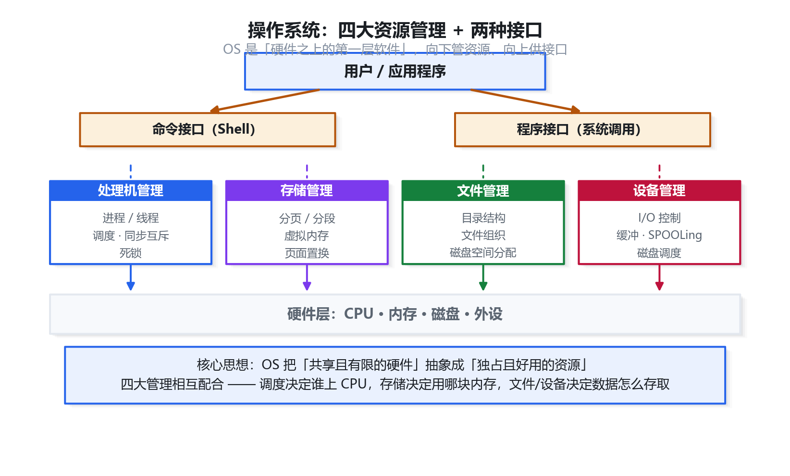
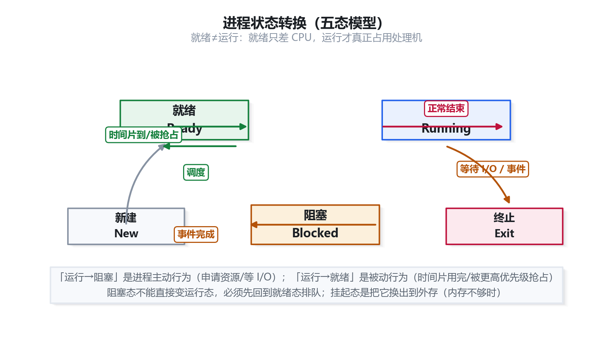
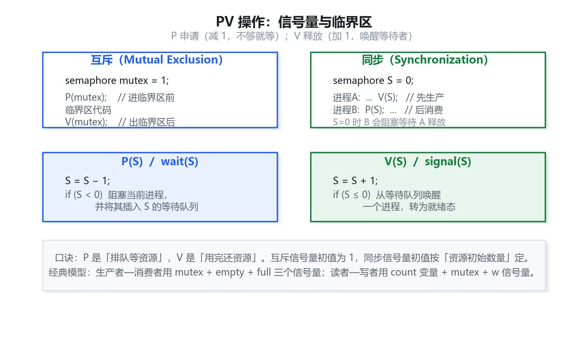
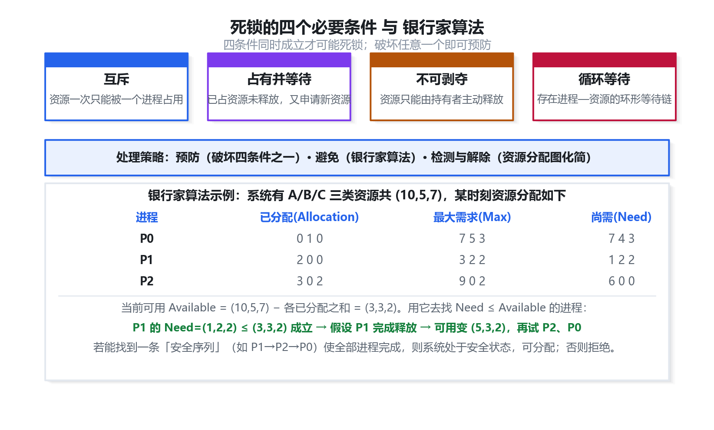
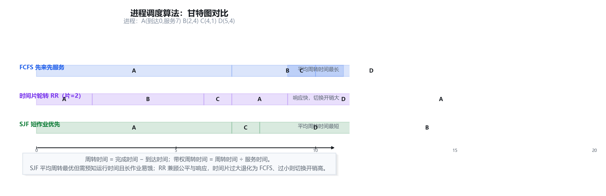
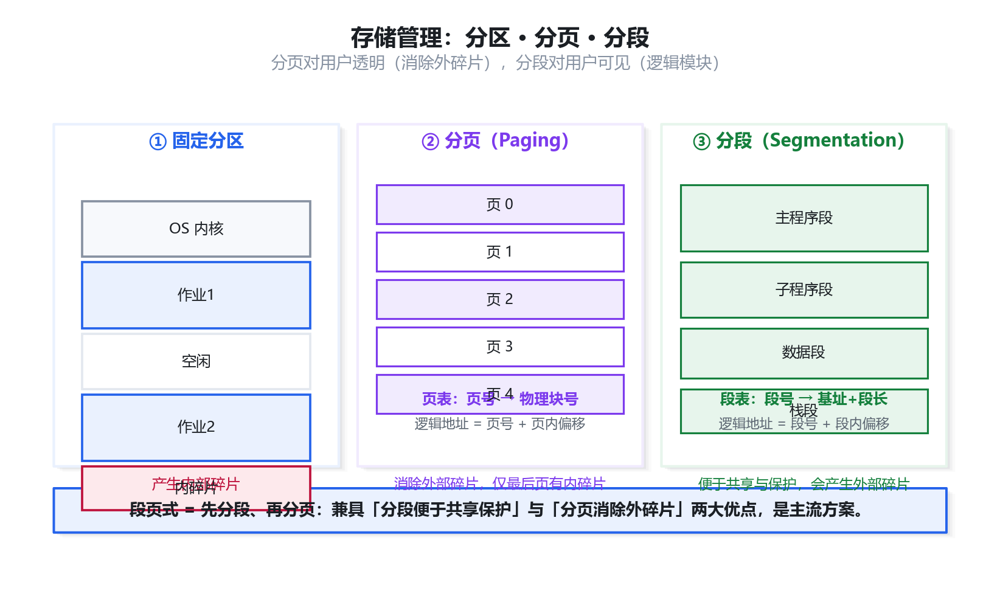
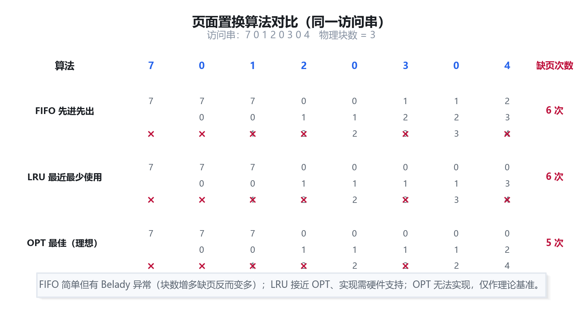
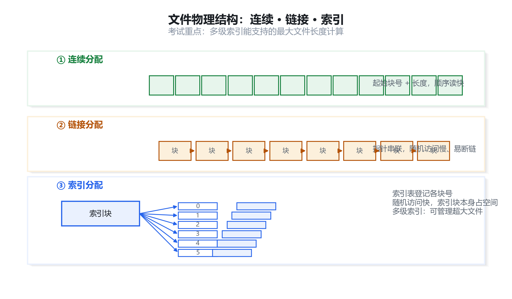
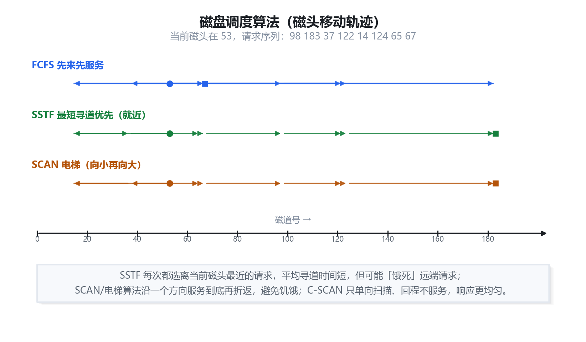
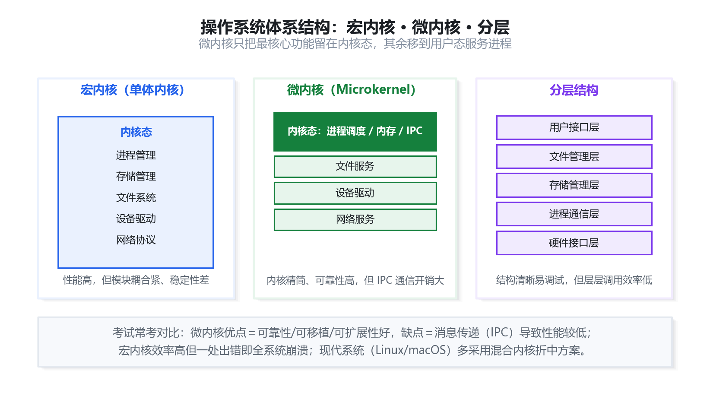

操作系统：考点精讲 + 真题详解
本章对应官方教程第 4 章，是上午「综合知识」的高分值章节，稳定占 5—7 分。进程管理（PV 操作、死锁、银行家算法）、存储管理（分页、页面置换）几乎是每年必考的计算题。本资料逐条讲透概念、给出真实原理插图（可放大细看）、并按「先讲道理、再列公式、最后逐步推导」的方式拆解真题。
操作系统概述
约 1 分1.1 操作系统是什么、管什么
教程操作系统（Operating System，OS）是管理计算机硬件与软件资源、并为用户和应用程序提供服务的系统软件。它是「硬件之上的第一层软件」，在整个计算机系统中处于承上启下的关键位置：向下管理资源，向上提供接口。
补充一句话理解：OS 就是硬件的「大管家 + 翻译官」。硬件资源就那么多（一个 CPU、有限内存、若干外设），谁先用、用多久、怎么分配，都由它统一调度；而应用程序不用直接操作硬件，只需向 OS「提要求」（系统调用）即可。
OS 的核心职能可概括为四大资源管理 + 两种接口：
- 处理机管理：以进程/线程为单位，负责调度、同步互斥、死锁处理。
- 存储管理：负责内存分配、分页/分段、虚拟存储、页面置换。
- 文件管理：负责目录结构、文件组织、磁盘空间分配。
- 设备管理：负责 I/O 控制、缓冲、SPOOLing、磁盘调度。
- 两种接口：命令接口（Shell，面向用户）与程序接口（系统调用，面向程序）。

1.2 操作系统的分类
教程按功能特征与发展阶段，常见操作系统类型如下（选择题常考「哪类系统的特点」）：
| 类型 | 主要特点 | 典型场景 |
|---|---|---|
| 批处理系统 | 成批提交作业、吞吐量大、无交互能力 | 早期大型机作业处理 |
| 分时系统 | 多用户共享 CPU、时间片轮转、交互性强 | 多用户终端系统 |
| 实时系统 | 及时性与可靠性优先，响应时间严格 | 工业控制、军事、订票 |
| 网络操作系统 | 网络通信与资源共享、安全管理 | 服务器集群 |
| 分布式系统 | 多机并行与分布、透明访问、可扩展 | 大规模计算集群 |
| 嵌入式系统 | 专用、资源受限、实时性强、固化 | 智能家电、车载 |
进程管理基础
约 1—2 分2.1 进程与线程
教程进程是程序在一个数据集合上的一次运行过程，是系统进行资源分配和调度的基本单位。它由三部分组成：程序、数据、进程控制块（PCB）。其中 PCB 是进程存在的唯一标志。
线程是进程内的一个执行单元，是 CPU 调度的基本单位。同一进程内的多个线程共享该进程的资源（如内存、打开的文件），但各自拥有独立的栈和寄存器。
| 对比项 | 进程 | 线程 |
|---|---|---|
| 基本单位 | 资源分配的基本单位 | CPU 调度的基本单位 |
| 地址空间 | 独立地址空间 | 共享所属进程的地址空间 |
| 切换开销 | 大（需切换页表、上下文） | 小（仅切换少量寄存器） |
| 通信方式 | 需借助 IPC（共享内存、消息等） | 直接读写共享变量 |
| 并发性 | 进程间并发 | 线程间并发度更高 |
2.2 进程的状态与转换
教程进程有三种基本状态：
- 运行态（Running）：占有 CPU，正在执行。
- 就绪态（Ready）：已具备运行条件（资源齐备），只差 CPU。
- 阻塞态（Blocked / 等待态）：因等待某事件（如 I/O 完成）而暂停。
此外还有新建态与终止态。状态转换是选择题的常客，务必记牢哪些转换「可以」、哪些「不可以」：

2.3 进程的同步与互斥
教程互斥指多个进程因争用临界资源而需排他地进入临界区；同步指多个进程为完成同一任务而需按一定先后次序协调执行。解决互斥问题需遵循四条准则：
- 空闲让进：临界区空闲时应允许一个进程进入。
- 忙则等待：已有进程在临界区时，其他进程必须等待。
- 有限等待：等待进入的进程应在有限时间内进入，不能饿死。
- 让权等待：等待时应释放 CPU，不能「忙等」。
补充四准则合称「空闲让进、忙则等待、有限等待、让权等待」。前两条保证正确性，后两条保证公平与效率。
进程同步与 PV 操作
高频计算3.1 信号量与 PV 操作
教程PV 操作由荷兰学者 Dijkstra 提出，通过信号量 S 与两个原子操作 P（wait）和 V（signal）实现同步互斥。约定：
S = S − 1;
if (S < 0) 该进程进入 S 的等待队列; /* 阻塞 */
V 操作（释放资源，唤醒等待者）
S = S + 1;
if (S ≤ 0) 从 S 的等待队列唤醒一个进程;
信号量的取值含义是解题的关键：
- S > 0：还有 S 个可用资源（无进程等待）。
- S = 0：资源刚好用完，无进程等待。
- S < 0：资源已用完，且 |S| 就是等待队列中被阻塞的进程数。

3.2 生产者—消费者问题
教程经典模型：生产者把产品放入缓冲区，消费者从缓冲区取走。需设三个信号量：empty（空缓冲区数，初值 = 缓冲区大小 n）、full（满缓冲区数，初值 0）、mutex（互斥访问缓冲区，初值 1）。
消费者：P(full); P(mutex); …取出…; V(mutex); V(empty);
P(empty) 后 P(mutex)：若先锁 mutex 再等 empty，缓冲区满时生产者会「抱着锁睡觉」，消费者永远进不来，造成死锁。两个 V 操作顺序则无严格要求。死锁与银行家算法
高频计算4.1 死锁的四个必要条件
教程死锁指多个进程因互相等待对方占有的资源而永久阻塞。产生死锁必须同时满足以下四个条件（缺一不可）：
- 互斥：资源一次只能被一个进程占用。
- 占有并等待（请求并保持）：已占资源未释放，又申请新资源。
- 不可剥夺（不可抢占）：资源只能由持有者主动释放。
- 循环等待：存在进程—资源的环形等待链。
处理死锁的策略有四种：预防（破坏四条件之一）、避免（银行家算法动态判断）、检测（资源分配图化简）、解除（撤销进程或剥夺资源）。

4.2 银行家算法
教程银行家算法把系统比作银行家：只有当分配后系统仍处于「安全状态」，才允许分配。核心数据结构：
| 名称 | 含义 |
|---|---|
| Available | 系统当前可用的各资源数量 |
| Max | 每个进程对各类资源的最大需求 |
| Allocation | 每个进程已分配的资源量 |
| Need | 每个进程尚需的资源量，Need = Max − Allocation |
安全性检查算法（判断是否存在「安全序列」）：
- 令
Work = Available，所有进程置为「未完成」。 - 找一个「未完成」且
Need ≤ Work的进程 Pi。 - 若找到：假设 Pi 完成并归还资源，
Work = Work + Allocation[i]，标记 Pi 完成，转步骤 2。 - 若找不到这样的 Pi，且仍有进程未完成 → 不安全；若所有进程都标记完成 → 安全。
系统有 A/B/C 三类资源共 (10,5,7)，某时刻分配如下表。判断系统是否安全。
Allocation：P0=(0,1,0) P1=(2,0,0) P2=(3,0,2)
Max：P0=(7,5,3) P1=(3,2,2) P2=(9,0,2)
Need = Max − Allocation：P0=(7,4,3) P1=(1,2,2) P2=(6,0,0)
Available = (10,5,7) − ΣAllocation = (10,5,7) − (5,1,2) = (5,3,2)
①Need(P1)=(1,2,2) ≤ (5,3,2) 成立 → P1 完成，Work = (5,3,2)+(2,0,0) = (7,3,2)
②Need(P0)=(7,4,3) 中 4 > 3 不满足；Need(P2)=(6,0,0) ≤ (7,3,2) 成立 → P2 完成，Work=(7,3,2)+(3,0,2)=(10,3,4)
③再试 P0：Need(P0)=(7,4,3) ≤ (10,3,4) 成立 → P0 完成
存在安全序列 P1 → P2 → P0，故系统安全。
查看答案与解析
答案：D
死锁四条件是：互斥、请求并保持（占有并等待）、不可剥夺、循环等待。D「资源可共享」不在其中——恰恰相反，死锁的前提是资源不能被共享（互斥）。
进程调度
约 1—2 分5.1 三级调度
教程按层次，处理机调度分为三级：
- 高级调度（作业调度）：决定哪些作业从外存进入内存，频率最低。
- 中级调度（对换调度）：决定哪些进程换入/换出内存，用于调节内存负载。
- 低级调度（进程调度）：决定就绪队列中哪个进程获得 CPU，频率最高，是最基本的调度。
5.2 常用调度算法
教程调度算法的核心是「选谁执行」，考试常考各算法的特点与计算：

| 算法 | 思想 | 优点 / 缺点 |
|---|---|---|
| 先来先服务 FCFS | 按到达顺序调度 | 公平简单；利于长作业，不利于短作业 |
| 短作业优先 SJF | 优先选运行时间最短者 | 平均周转时间最短；长作业可能饿死 |
| 时间片轮转 RR | 按时间片轮流执行 | 响应快、公平；时间片过小则切换开销大 |
| 优先级调度 | 选优先级最高者 | 灵活；低优先级可能饿死，用「老化」缓解 |
| 多级反馈队列 | 多队列 + 动态调整优先级 | 兼顾各类进程，通用性好；实现复杂 |
三个作业同时到达，运行时间分别为 P1=8、P2=4、P3=2。分别用 FCFS 与 SJF 求平均周转时间。
FCFS（按 P1→P2→P3）：周转时间 8、12、14，平均 = (8+12+14)/3 = 11.3
SJF（按 P3→P2→P1）：周转时间 2、6、14，平均 = (2+6+14)/3 = 7.3
结论：SJF 的平均周转时间更短。
存储管理
高频计算6.1 三种基本存储管理方式
教程存储管理要解决「内存如何分给进程」。三种基本方式按演进顺序为：分区管理 → 分页管理 → 分段管理（以及结合二者的段页式）。

| 对比项 | 分页 | 分段 |
|---|---|---|
| 划分依据 | 物理划分，大小固定且相等 | 逻辑划分，大小不等（按程序逻辑） |
| 碎片类型 | 内部碎片（最后一页浪费） | 外部碎片 |
| 对用户 | 透明（用户不可见） | 可见（用户按逻辑命名） |
| 地址空间 | 一维（页号 + 页内偏移） | 二维（段号 + 段内偏移） |
| 共享保护 | 不便 | 便于共享与保护 |
6.2 逻辑地址到物理地址的转换
教程分页系统中，逻辑地址被划分为「页号 P + 页内偏移 W」，通过页表把页号映射为物理块号（页帧号），块号与页内偏移拼接即得物理地址。
物理地址 = 页帧号 f × 页面大小 + 页内偏移 W
页号 P = 逻辑地址 ÷ 页面大小（整除） 偏移 W = 逻辑地址 mod 页面大小
页面大小为 4KB，逻辑地址为 8196（十进制），页表中第 2 页对应的物理块号为 5，求物理地址。
4KB = 4096 字节
页号 P = 8196 ÷ 4096 = 2，偏移 W = 8196 mod 4096 = 4
物理地址 = 5 × 4096 + 4 = 20484
6.3 虚拟存储与缺页中断
教程虚拟存储利用「局部性原理」，只把进程当前用到的部分装入内存，其余留在外存，从而在有限的物理内存上运行更大的程序。当访问的页不在内存时，产生缺页中断，由 OS 调入所需页（可能需先置换出一页）。
补充局部性原理是虚拟存储的理论基石：时间局部性（刚访问过的数据很可能再次被访问）与空间局部性（相邻地址的数据很可能被一起访问）。因为程序有局部性，所以「只装一部分」也能跑得动。
页面置换算法
高频计算7.1 三种经典置换算法
教程内存不足时需「换出一页」，选谁换出就是置换算法要解决的问题：
- 最佳置换 OPT：淘汰以后最长时间不再访问的页。理论最优（缺页最少），但需预知未来，无法实现，仅作评价基准。
- 先进先出 FIFO：淘汰最先进入的页。实现简单，但可能出现Belady 异常（分配的页框越多，缺页反而越多）。
- 最近最久未使用 LRU：淘汰最近一段时间最久未被访问的页。性能接近 OPT，但需记录访问历史，开销较大。

访问串为 7,0,1,2,0,3,0,4，分配 3 个页框，用 FIFO 求缺页次数。
7 → 缺页 [7] 0 → 缺页 [7,0] 1 → 缺页 [7,0,1]
2 → 缺页，淘汰 7 → [0,1,2] 0 → 命中
3 → 缺页，淘汰 0 → [1,2,3] 0 → 缺页，淘汰 1 → [2,3,0]
4 → 缺页，淘汰 2 → [3,0,4]
缺页次数 = 7 次（总访问 8 次，仅第 5 次命中）
文件管理
约 1—2 分8.1 文件的逻辑与物理结构
教程逻辑结构是用户看到的文件组织方式（如流式文件、记录式文件）；物理结构是文件在磁盘上的实际存放方式，主要有三种：

| 结构 | 组织方式 | 优点 | 缺点 |
|---|---|---|---|
| 连续结构 | 占用连续磁盘块 | 顺序访问快、支持随机访问 | 不易扩展、产生外部碎片 |
| 链接结构 | 块间用指针串联 | 便于扩展、无外部碎片 | 只宜顺序访问、指针占空间 |
| 索引结构 | 索引表记录各块地址 | 支持随机访问、便于扩展 | 索引表本身占空间 |
8.2 目录结构与文件共享
教程目录是文件的「索引表」，常见结构有：一级目录（所有文件同处一目录）、二级目录（主目录 + 用户目录）、树形目录（多级层次，最常用）、图形目录（允许共享，形成有向无环图）。树形目录便于分类管理，但不便于共享；图形目录通过「硬链接/软链接」实现文件共享。
设备与磁盘管理
约 1—2 分9.1 磁盘调度算法
教程磁盘访问时间由寻道时间 + 旋转延迟 + 传输时间组成，其中寻道时间占比最大，故磁盘调度主要优化「磁头移动」。常用算法：

| 算法 | 思想 | 特点 |
|---|---|---|
| 先来先服务 FCFS | 按请求到达顺序服务 | 公平；平均寻道距离大 |
| 最短寻道时间优先 SSTF | 优先服务距当前磁头最近的请求 | 寻道性能好；可能饿死远端请求 |
| 扫描 SCAN（电梯） | 按一个方向扫到底再折返 | 避免饿死；折返处响应不均 |
| 循环扫描 CSCAN | 只单向服务，回程快速返回起点 | 响应更均匀；回程不服务 |
磁头当前在 100 道，请求序列为 55, 58, 39, 18, 90, 160, 150, 38, 184。用 SSTF 求移动顺序。
从 100 出发，每次选最近的：
100 → 90（差10）→ 58（差32）→ 55（差3）→ 39（差16）→ 38（差1）→ 18（差20）
→ 150（差132）→ 160（差10）→ 184（差24）
总移动道数 ≈ 10+32+3+16+1+20+132+10+24 = 248 道
9.2 SPOOLing 与缓冲技术
教程SPOOLing（假脱机）用磁盘上的输入井/输出井模拟脱机输入输出，把独占设备「虚拟」为共享设备。典型应用是打印机共享：多个进程的打印请求先送入输出井排队，再由守护进程依次真正打印。
缓冲技术用于缓解 CPU 与外设的速度差异，常见有单缓冲、双缓冲、缓冲池等。引入缓冲的三大作用：缓和速度矛盾、减少中断次数、提高 CPU 与外设的并行度。

本章复习总结与应试策略
冲刺必看10.1 全章知识地图
本小节是对本章全部考点的收束，建议考前反复回看。
本章围绕「操作系统如何管理资源」展开，可归为四条主线：
| 主线 | 核心考点 | 对应小节 | 考频 |
|---|---|---|---|
| 进程管理 | 进程/线程区别、三态转换、同步互斥、PV 操作 | 2、3 | 高 |
| 死锁与调度 | 死锁四条件、银行家算法、调度算法 | 4、5 | 高 |
| 存储管理 | 分页/分段、地址转换、虚拟存储、页面置换 | 6、7 | 高 |
| 文件与设备 | 文件物理结构、目录、磁盘调度、SPOOLing | 8、9 | 中高 |
10.2 必背公式速查
Need = Max − Allocation；Available = 总资源 − ΣAllocation
逻辑地址 = 页号 × 页面大小 + 偏移；物理地址 = 页帧号 × 页面大小 + 偏移
磁盘访问时间 = 寻道时间 + 旋转延迟 + 传输时间
平均周转时间 = Σ(完成时间 − 到达时间) / 进程数
10.3 三条应试心法
10.4 与后续章节的衔接
以下是承上启下的提示，帮助你建立全局观。
本章讲的是「操作系统如何在软件层面管理硬件资源」。下一章将进入数据库系统——数据库的事务并发控制（锁、隔离级别）与本章的「进程同步互斥」在思想上一脉相承；而其存储结构（B+ 树、索引）也建立在文件管理的基础之上。把本章的「资源争用与调度」思维带到第 3 章，理解数据库的并发与恢复会顺畅很多。